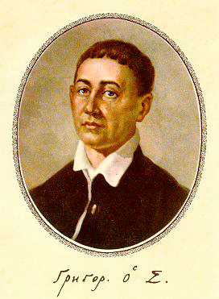
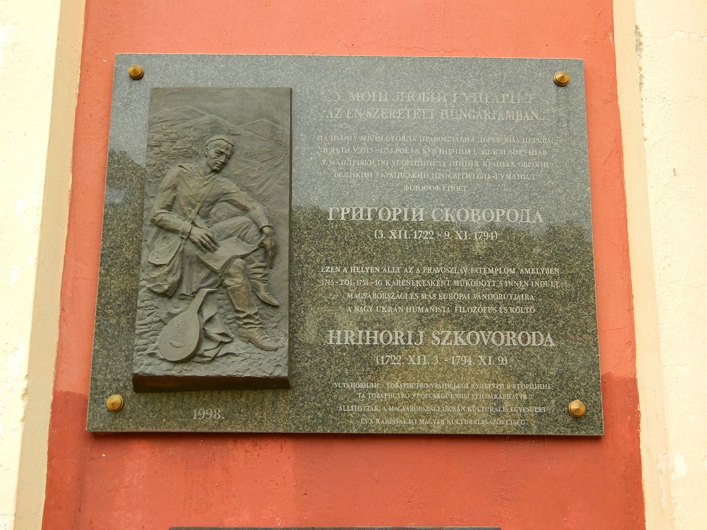
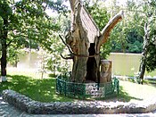

Сковорода Григорій Савич
Життєпис
Григо́рій Са́вич Сковорода́ (22 листопада (3 грудня) 1722, Чорнухи, Лубенський полк, Гетьманщина, Російська імперія, нині Полтавська область, Україна — 29 жовтня (9 листопада) 1794, Іванівка, Харківщина, Російська імперія) — український філософ-містик, богослов, поет, педагог, можливо, і композитор літургійної музики. Мав значний вплив на сучасників і подальші покоління своїми байками, піснями, філософськими творами, а також способом життя, через що його називали «Сократом». Навчався в Києво-Могилянській академії (вищої освіти не здобув). Філософські погляди Сковороди присвячені головним чином етиці. Власної філософської системи не створив. Не був лояльним до церковної та світської ієрархії, відкидав будь-який примус, не любив церковних ритуалів, віддаючи перевагу особистій духовній свободі. Від 1769 року вів життя самітника й мандрівного філософа; мандрував переважно по Слобожанщині. Тоді ж почав писати філософські діалоги й трактати, в яких біблійна проблематика переплітається з ідеями платонізму та стоїцизму. Головним сенсом людського існування вважав самопізнання. Григорій Сковорода писав свої твори різновидами староукраїнської літературної мови: художні та філософські твори слов'яноруською (слов'яноукраїнською), поезії та байки — книжною українською (у ній менше церковнослов'янських елементів). Частину листування Сковорода вів також латинською мовою.[2][⇨]
Ранні роки
Народився в сотенному містечку Чорнухи Лубенського полку, що нині на Полтавщині в козацькій родині Сави та
Пелагеї.
Батько Сава Сковорода був рядовим козаком, у мирний час займався шинкуванням і продажем вина в Чорнухах; помер
наприкінці 1730-х або на початку 1740-х років
У сім років Григорія віддали до чотирирічної дяківської школи в Чорнухах.
У серпні 1734 року Григорій вступив до Києво-Могилянської академії, яка на той час перебувала на вершині свого
розквіту. У першому, ординарному класі (аналогія, інфима) вивчали українську книжну, польську мови і поступово
переходили на латину, яка ставала основною в подальших класах, також вивчали церковнослов'янську.
У
1735—1738 роках Сковорода продовжив навчання в наступних граматичних класах, вивчав латинську мову, прозові та
поетичні твори цією мовою. Далі були класи поетики та риторики, а також у 1739—1740 роках починає вчити
грецьку,
німецьку й гебрейську мови в Симона Тодорського. Потім схема навчання передбачала клас філософії тривалістю два
роки,
де вивчались діалектика, логіка, етика, фізика, метафізика. У цьому класі Сковорода навчався під орудою
префекта
академії Михайла Козачинського.
Придворна капела (1742-1744)
У 1741 році, не завершивши клас філософії, Сковорода у Глухові пройшов конкурсний відбір до придворної капели
імператриці Єлизавети Петрівни і вирушив до Санкт-Петербурга. У придворній капелі в Санкт-Петербурзі та Москві
виконував партії альта в операх, літургіях, різних урочистостях. Зокрема, співав на коронації Єлизавети в
Москві в італійській опері Йоганна Адольфа Гассе «La clemenza di Tito» («Милосердя Тита»).
Наприкінці серпня
1744 року разом з почтом імператриці Єлизавети прибув до Києва, куди Єлизавета їхала «на поклоніння святим
Божим угодникам». Назад з імператорським двором вертатися Сковорода не став, звільнився в чині «придворного
уставника» і повернувся до Києво-Могилянської академії, аби завершити курс філософії[
Закордонна мандрівка (1745-1750)
Наприкінці 1745 року, закінчивши штудії філософії в Києво-Могилянській академії і бажаючи побачити чужі краї, пізнати ширше «коло наук», завербувався до «Токайської комісії з заготівлі вин до царського двору» під керівництвом генерал-майора Федора Степановича Вишневського (1682—1749; за походженням серб із Трансільванії, від 1715 року на російській службі). Усі перші біографи Сковороди вважали, що він потрапив до комісії в ролі дячка для похідної православної церкви, але на думку Леоніда Ушкалова він найімовірніше поїхав до Угорщини як компаньйон генерала Вишневського[7]. Наприкінці серпня 1745 року комісія вирушила з Києва і у 20-х числах вересня прибула до Токаю. Окрім Токаю, Сковорода відвідав Пресбург, Офен, Відень та інші навколишні міста, де спілкувався з ученими людьми. Існують припущення, що Сковорода побував в Італії й Німеччині, проте документальних підтверджень цього, як і можливого навчання в університеті Галле, немає[8]. У Пресбурзі Сковорода міг ознайомитися з містичними ідеями пієтизму, які прийшли з Галле і побутували в середовищі місцевої лютеранської громади. Можливо, на цьому позначився вплив Симона Тодорського, який до того ж у 1737—1738 роках вчителював у православних школах на території колишньої Угорщини.
Перебування в Переяславі, Ковраях (1750-1759)
У 1750-1751 році переяславський єпископ Никодим (Скребницький) запросив Сковороду працювати учителем поетики в
нещодавно заснованому колегіумі в Переяславі. Сковорода погодився, підготував свій курс і розпочав заняття. За
три-чотири місяці назрів конфлікт зі Скребницьким, якого не вдовольняли методи викладання Сковороди і який
наполягав
на дотриманні старих зразків. Сковорода не погодився змінити написані ним правила для поезії. Владика
образився,
Сковороду вигнали.
Після скандалу Сковорода проживав у приятеля, бідував. У вересні 1751 року він відновив навчання в
Києво-Могилянській
академії, вступивши на богослов'я. Богословський курс вів видатний поет, префект академії Георгій Кониський;
він
передбачав 4-річне навчання і прирівнювався до вищої університетської освіти. Сковорода навчався лише два
роки.
Улітку 1753 року київський митрополит Тимофій Щербацький, на прохання свого приятеля бунчукового товариша
Степана
Томари (1719—1794) знайти гувернанта («інспектора») для навчання старшого сина Василя (1746—1819),
порекомендував
йому Григорія Сковороду як найкращого студента. Восени 1753 року Сковорода прибув у село Каврай Переяславського
полку, де був маєток Томари.
У Томари Сковорода мешкав близько шести років. Восени 1754 року стався конфлікт, через який виховання Василя
перервалося на кілька місяців: хлопець дав кепську відповідь на поставлене запитання, за що запальний Сковорода
назвав його «свинячою головою». Про це стало відомо матері Ганні, доньки Василя Кочубея, і вона наполягла на
тім, аби
покарати «інспектора». Томара не зміг відмовити дружині і звільнив Сковороду.
Сковорода подався до свого приятеля, одного з переяславських сотників. За його протекцією в перших числах січня
1755
року разом з ієромонахами Каліграфом (Василем Крижанівським) та Іринеєм Братановичем, котрі отримали
призначення до
Слов'яно-греко-латинської академії, вирушив до Москви, а звідти до Троїце-Сергієвої лаври. Тут на нього чекав
намісник Кирило Ляшевецький, який викладав богослов'я в лаврській семінарії і, здається, пропонував викладати
Сковороді. Проте Григорій відмовився, вочевидь, через те, що не бажав приймати монаший постриг, або ж тому, що
його
пекла, як писав Михайло Ковалинський, «постійна відраза до цього краю». На зворотному шляху Степан Томара
умовив його
повернутися до вчителювання у своєму домі.
У Кавраї Сковорода почав писати поезію, зокрема кілька поезій для збірки «Сад божественних пісень». Пізньої осені 1758 року він бачив віщий сон, в якому явилися різноманітні людські прошарки зі суспільними й моральними вадами. Розцінивши його як Боже Об'явлення, Сковорода почав розмірковувати над життям аскета[13]. Улітку 1759 року Сковорода покинув Каврай, оскільки Василь Томара зібрався їхати вчитися за кордон до Замостя і Відня. До свого домашнього вчителя на все життя зберіг повагу і найтепліші почуття.
Харківський колегіум (1759-1762)
Улітку 1759 року Сковорода прийняв запрошення білгородського та обоянського єпископа Йоасафа Миткевича
викладати поетику в Харківському колегіумі. Він покинув Гетьманщину і перебрався на Слобожанщину, яку полюбив
усією душею. На той час колегіум був найпередовішим навчальним закладом в усій Україні, тут, на відміну від
Києво-Могилянської академії, віддавали перевагу природничим і точним наукам, поряд з латиною більше вивчали
грецьку, німецьку, французьку мови. Сковорода викладав тут з ентузіазмом. Але й тут стався конфлікт. Владика
Йоасаф Миткевич, маючи на меті залишити Сковороду для духовної служби, збирався вмовити його прийняти постриг —
цю справу він доручив судді єпархіяльної консисторії й архімандритові білгородського Миколаївського монастиря
Гервасієві Якубовичу, який був приятелем філософа по Переяславу. На це Сковорода відповів: «Невже ви хочете,
щоб і я примножив число фарисеїв?». У результаті подальших наполягань Якубовича влітку 1760 року Сковорода
звільнився з колегіуму.
Надалі він проживав у невідомого на ім'я приятеля в селі Стариця, яке належало
бєлгородському Миколаївському монастиреві. Упродовж 1760—1762 років жив на самоті, розмірковував над
Божественним промислом і пізнанням себе.
Навесні 1762 року Сковорода, приїхавши на кілька тижнів до Харкова,
довідався від знайомого протоієрея Петра Ковалинського про його талановитого племінника Михайла
Ковалинського і спеціально подався до колегіуму, аби познайомитися з ним. Юнак відразу припав йому до
душі і тільки через те Сковорода прийняв повторну пропозицію єпископа Йоасафа Миткевича викладати в
Харківському колегіумі («Адже заради тебе, одверто кажучи, заради тебе одного я залишив мій такий приємний
спокій, пустився на життєві хвилі», — згодом писав Ковалинському в листі).
1 вересня 1762 року Сковорода
почав викладати в класі синтаксими, також вів екстраординарний 2-річний курс грецької мови[5]. Навколо нього
сформувалося коло шанувальників — студенти філософії Яків Правицький, Василь Білозерський, Микола Заводовський,
сам Ковалинський зі своїм молодшим братом Григорієм, учнем синтаксими, і навіть 9-річний учень інфими Яків
Єнкевич. Вони збиралися в домі Сковороди, читали античних авторів, писали вірші, співали, гуляли за містом у
садах. Не зразу Ковалинський потягнувся до Сковороди («Любив його серце, але цурався його ума») — аж після
того, як у 1763 році йому приснився учитель, від якого навсібіч сипалися духовні іскри. У них встановилося
інтенсивне духовне спілкування, своєрідний «духовний роман», листування. У листах Сковорода висловлював ідеї,
які згодом розвивав у своїх філософських трактатах. Згодом, після смерті вчителя, Ковалинський написав його
ґрунтовну біографію, на яку посилаються всі дослідники творчості мудреця. Про стиль його життя він пише:
На Слобожанщині (1762-1768)
Відтепер Сковорода обрав новий і незнаний до того стиль життя, а саме — мандрівку. І ця мандрівка тривала до самої смерті — чверть століття. Була вона повна пригод, оповита переказами й легендами. У ній ніколи не розлучався філософ із Біблією, сопілкою чи флейтою, і своїми творами. Слава про нього розходилася широко, і багато хто бажав його бачити й чути як речника великої правди. Після остаточного звільнення з Харківського колегіуму він оселився на пасіці на березі Лопані в Гужвинському лісі за 10 верст від Харкова і зажив життям пустельника. Ліс належав відставному підпрапорному (титул, запроваджений у слобідських полках, дорівнював значковому товаришеві в Гетьманщині) Василеві Земборському, батькові одного зі студентів «додаткових класів» колегіуму. Тут Сковорода почав писати філософські байки (згодом вони увійшли до збірки «Байки Харківські», що стала першою збіркою байок в українській літературі) і філософські діалоги (перший з них — «Наркіс. Розмова про те: пізнай себе», базований на сюжеті Метаморфоз Овідія; другий — «Симфонія, названа Книга Асхань, про пізнання самого себе», на підставі Книги Ісуса Навина). Вірші, пісні та байки Сковорода писав українською книжною мовою та латиною[15], натомість філософські діалоги і трактати — химерною сумішшю церковнослов'янської, української та російської мов. З Гужвинського лісу Сковорода навідувався до Харкова, до села Бабаї, де священником був його колишній учень по Харківському колегіуму Яків Правицький. У Бабаях навколо філософа сформувався своєрідний гурток з-поміж священників сусідніх парафій, приятелів Якова Правицького. Можливо, був серед них і власник Бабаїв Петро Щербинін, родич слобідського губернатора і майбутнього першого генерал-губернатора Харківського намісництва (у 1780—1783) Євдокима Щербиніна[16]. Тут Сковорода познайомився з Олексієм Юрійовичем Сошальським, літнім одинаком, освіченим, оригіналом, як і сам Сковорода, власником села Гусинка. В Олексія Сошальського він зупинявся часто, починаючи з 1770 року, проживаючи влітку на пасіці в лісі, а взимку — в панському домі; спілкувався і з його молодшими братами Осипом та Георгієм. У травні 1770 року разом зі Сошальськими Сковорода поїхав до Києва, зупинившись у свого двоюрідного брата, Юстина (Івана) Звіряки, який натоді був за «старшого» в Китаївській пустині, і прожив у нього 3 місяці. У серпні зі Сковородою трапився дивний випадок. Якось він раптом відчув неспокій, невимовне бажання покинути Київ і повернутися до Харкова. Юстин відмовляв його, але Сковорода не послухав, подався до Сошальських, які проживали на Подолі. Спускаючись із Гори, недалеко Андріївської церкви як невідома сила спонукала його повернути назад. Він відійшов на чималу відстань, потім вернувся, але знову невидима сила повернула його назад. Все ж, набравшись рішучості, Сковорода пішов Андріївським узвозом вниз, але раптом відчув трупний сморід і побіг назад. Він переказав про це Сошальським і швидко почав збиратися в дорогу, примовляючи, що в Києві буде чума. Ніхто не вірив, але 3 вересня 1770 року в Києві почався мор. Епідемія почалася у Волощині чи Молдові в турецькому війську і прийшла сюди з початком нової російсько-турецької війни. За 3 місяці в Києві на Подолі померло 6 тисяч людей. Наприкінці серпня 1771-го моровиця дійшла до Москви. Сковорода ж, покинувши спішно Київ, за два тижні вже був у Свято-Троїцькому монастирі неподалік села Чернеччина за 4 версти від Охтирки. Тут до нього дійшла звістка про мор у Києві, і тут у монастирському саду він пережив містичний екстаз:
Остання мандрівка філософа
В останній рік життя Сковорода проживав у селі Пан-Іванівка в домі колезького радника Андрія Івановича Ковалівського, який доводився вітчимом майбутньому засновникові Харківського університету Василеві Каразину. На той час Михайло Ковалинський після смерті свого покровителя князя Потьомкіна попав в опалу і проживав у маєтку Хотетово за 25 верст на південь від Орла. Старий Сковорода після 19 літ розлуки вирішив його провідати. «Попри далечінь дороги, на вкрай погану погоду й на постійну відразу до цього краю» він вирушив пішки з Пан-Іванівки. Привіз Ковалинському свої твори і прожив у нього 3 тижні. 26 серпня 1794 року, відмовившись від грошей, вирушив назад «в любу Україну, де він дотепер жив і хотів би померти». На певний час через рясні дощі був змушений зупинитися в Курську в Знам'янському чоловічому монастирі, де його радо прийняв архімандрит Амвросій Гиновський. Здається, Сковорода ще збирався відвідати Гусинку, але відчуваючи, що підупадає на силах, подався до Пан-Іванівки, де прожив ще місяць.
Смерть
Помер 9 листопада (29 жовтня ст.ст.) 1794 року в селі Пан-Іванівка (на сьогодні Сковородинівка Золочівського району Харківської області) в домі Андрія Ковалівського.

На хресті над його могилою, на прохання самого Сковороди, написано: «Світ ловив мене, та не
впіймав…». Сьогодні до неї можна потрапити, з'їхавши з дороги Харків-Суми біля селища Максимівка (60
км від Харкова) і далі добиратися 18 км до села Сковородинівка.
Жодного
свого твору Сковорода за життя не надрукував. Окремі примірники рукописів збереглися в друзів, зокрема у Якова
Правицького в Бабаях — трактати «Наркіс» і «Асхань».
Творча спадщина
Твори Сковороди за життя не друкувались, оскільки тодішня цензура знайшла їх
«противними Святому Писанію і образливими для чернецтва». Вихований у дусі філософічно-релігійного навчання,
Сковорода повставав проти мертвої церковної схоластики та духового гноблення московського «православ'я»,
спираючись у своїй філософії на Біблію. Сковорода повчав, що царство людини знаходиться всередині неї і
Офіційна московська релігія ділила людство на більш благословенних Богом і менш благословенних, а навіть і
таких, що перебувають ніби під прокляттям, себто кріпаків. А Сковорода вчив, що «всяка праця благословенна
Богом», а розподіл місць коло Бога називав непростимим гріхом. Московське православ'я і взагалі все московське
духовенство було нетерпимим до всього чужого як єретичного, «неправославного». Сковорода навчав, що найбільше й
фактично єдине завдання філософії — шукати правду і прагнути до неї. Але в умовах людського життя ця мета
недосяжна, і щастя людини полягає саме в тому, що вона все мусить шукати правди. До цієї мети можна йти різними
шляхами, і тому нетерпимість до тих, хто інакше думає, не знаходить виправдання. Так само й релігійна
нетерпимість не знаходить виправдання, бо вічна правда проявляється на цьому світі в різних формах. Будучи у
ставленні до себе самого цілковито безкомпромісним і осягнувши внаслідок цього повну гармонію між своєю наукою
та своїм життям, Сковорода був надзвичайно лагідний і оглядний у ставленні до інших.
Видання творів
Твори Сковороди за його життя ніколи не друкувалися. Вперше його твір діалог «Наркісс» було надруковано 1798
року в Санкт-Петербурзі. У 1837 році у Москві окремими книжками з’явилися «Басни Харьковскія», «Бесѣда,
нареченная двое», 1839 року — «Дружескій разговор о душевном мирѣ», «Убогій Жайворонок», «Брань архистратига
Михаила со Сатаною», також протягом 19 століття виходили деякі уривки, листи та поезії.
1861 року в Санкт-Петербурзі вийшла перша збірка творів «Сочинения в стихах и прозе Григория Саввича Сковороды.
С его портретом и почерком его руки». Перше академічне зібрання вийшло у Харкові до 100-річчя з дня смерті
філософа у 1894 році «Сочинения Григория Саввича Сковороды, собранные и редактированные проф. Д. И. Багалеем»
(сьомий том «Сборника Харьковского историко-филологического общества»).
Наступною спробою академічного видання творів Сковороди було «Собрание сочинений Г. С. Сковороды. С биографией
Г. С. Сковороды М. И. Ковалинского, с заметками и примечаниями В. Бонч-Бруевича» (Санкт-Петербург, 1912). З
запланованих двох томів вийшов лише перший, до якого ввійшли майже всі філософські твори.
1961 року вийшла збірка творів Сковороди, до якої ввійшли всі відомі на той час твори письменника. Перший том
містив філософські трактати й діалоги, а другий – художні твори, епістолярій, життєпис Сковороди пера
Ковалинського та dubia.
На підставі цього видання співробітники Інституту філософії Академії наук України підготували й видали в 1973
році «Повне зібрання творів» Сковороди у двох томах.
1972 р. - до 250 - річчя від дня народження опубліковано 2-х томник повного зібрання його творів.
1994 р. - вперше здійснено українською мовою видання усіх творів. [28]
У 2000-х роках Леонід Ушкалов підготував кілька видань творів, в тому числі повну академічну збірку.[29]